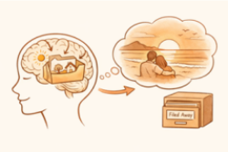
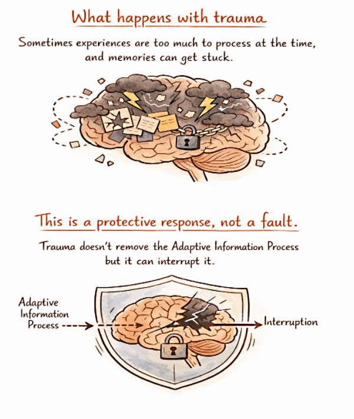
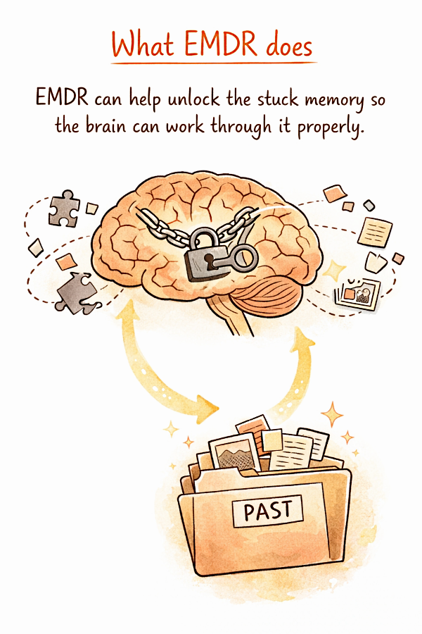
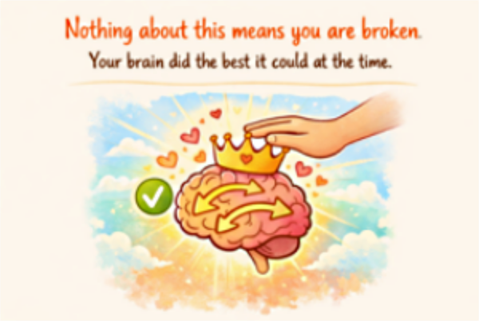

Please contact for help with painful memories and difficult emotions.
Adaptive Information Processing
Trauma EMDR
How memories are made

Traumatic events

What EMDR does






Please contact for help with painful memories and difficult emotions.